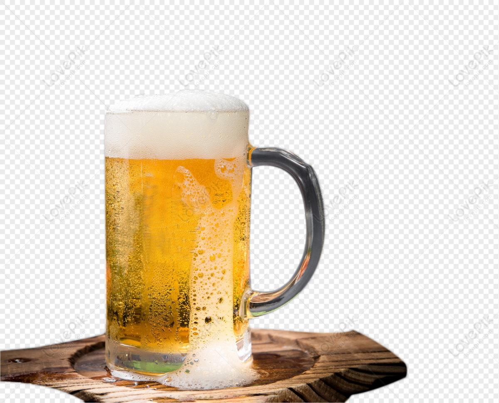

Lager
Una cerveza Lager es un estilo de cerveza de fermentación baja que se caracteriza por su perfil limpio,
refrescante y generalmente más suave en comparación con las Ales. Este estilo se distingue por utilizar
levaduras de fermentación baja que actúan más lentamente y a temperaturas más frías, lo que contribuye a un
proceso de fermentación más prolongado y a la formación de menos subproductos de fermentación.

Ale
Una cerveza Ale es un término amplio que abarca una amplia variedad de estilos de cerveza, caracterizados
principalmente por utilizar levaduras de fermentación alta. Estas levaduras actúan rápidamente en temperaturas
más cálidas y suelen producir una mayor variedad de sabores y aromas en comparación con las levaduras de
fermentación baja utilizadas en las lagers.

Stout
Una cerveza Stout es un estilo robusto y oscuro que se caracteriza por su profundo color marrón oscuro a
negro,
con sabores intensos y complejos. Tradicionalmente, tiene un cuerpo más completo y cremoso debido a su alta
concentración de maltas tostadas, que también le confieren notas de café, chocolate amargo y a veces, toques
ahumados. A menudo tiene un amargor suave a moderado, equilibrado con dulzor residual de las maltas.
Porter
Una cerveza Porter es un estilo clásico de cerveza oscura que se originó en el siglo XVIII en Inglaterra. Se
distingue por su color que varía del marrón oscuro al negro, aunque generalmente es menos intenso que el de
una
Stout. Los sabores típicos de una Porter incluyen maltas tostadas que aportan notas de chocolate, café suave y
caramelo, con un cuerpo medio a completo que proporciona una sensación en boca suave y aterciopelada. A menudo
tiene un amargor moderado y equilibrado, proveniente de los lúpulos utilizados.

Lambic
Las Lambic son conocidas por su carácter ácido y complejo, con un perfil de sabor que puede incluir notas
agrias, afrutadas y a menudo, un ligero toque de madera debido a su crianza en barricas. Su color varía entre
dorado pálido y ámbar, con una carbonatación baja a moderada y una textura ligera y efervescente en boca.